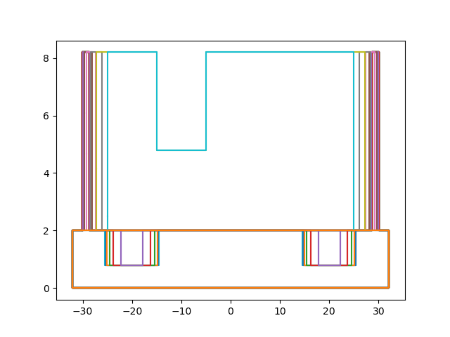

为了实现通过用户给的3D模型实现避障功能的路径规划,我们采取首先对模型进行切片,然后再通过修改路径长度和两点之间路径获取的函数完成
对于meshcut库的使用
可以实现3D建模处理的库有很多,但如果仅仅是想要一个切面就将vtk搬出来未免就有一点大材小用了,通过寻找,我找到了一个meshcut库,其可以将stl文件和定义的平面求得交线.
meshcut库的开发主页
下面是使用meshcut库实现对一个3D模型切割的效果图

而其所使用的源码如下
1 | import stl |
判断一条线是否与多边形相交
算法
接下来我们来讨论一下关于碰撞检测这一部分的内容.
多边形是由有限个点首尾相连而成的,那么假如一条线段与多边形相交,那么其必然与多边形的至少一条边相交.因此问题就转化为判断一条线段是否与一个线段集中线段相交.
而对于判断两线段是否相交的方法,记第一条线段两点为$A_1,A_2$,第二条线段两点为$B_1,B_2$,如果从线段一指向线段二某点(通常使用某个端点)的两个矢量与线段二的叉乘异号,表明$A_1,A_2$分别位于第二条线段两侧.同理,可以判断$B_1,B_2$是否位于第一条线段两侧.如果两个条件同时满足,那么就可以说明线段相交.
这一手段参考资料
特殊情况,判断点是否在多边形内,可以用相似的方法,通过过该点做一条射线,然后统计相交点数,如果相交点数为偶数,则点在多边形内,否则在多边形外
实现
在实现这个问题的同时,需要考虑到Python在处理大量的for循环时效率非常低下,因此需要对操作进行向量化处理.
假定$A_x,A_y,B_x,B_y$为$n,n,m,m$维列向量,定义$C_{ij}$的值等于$A_{i}\times B_{j}$为行列式的值,根据线性代数相关知识,我们可以得到$C=A_xB^T_y-A_yB_x^T$
如此操作时需要注意对
array进行reshape
下面展示了实现矢量集叉乘和判断线段集是否相交的代码
1 | def calc_cross(a: np.array, b: np.array): |
1 | def check_crossing(lines1: np.array, lines2: np.array): |
这个时候我意识到了一个问题:在实际的移动过程中,z轴的移动无法控制,因此需要在路径规划的过程中对z轴进行单独处理
因此:在每一次移动时,首先移动z轴,然后就可以理解为平面内运动